Aplicaciones y sistemas a medida
Turnos, reservas, fichas de clientes y paneles internos. Herramientas simples de usar que reemplazan planillas, papeles y mensajes sueltos.
Apps a medida · Tableros · Automatización
Durante más de seis años medí operaciones de logística, e‑commerce y auditoría: armé tableros, seguí indicadores y encontré dónde se perdía tiempo y dinero. Hoy uso esa mirada para diseñar aplicaciones, tableros y automatizaciones pensadas desde cómo trabaja cada negocio.
Qué hago
Lo que ofrezco, y más abajo los trabajos que lo muestran funcionando.
Turnos, reservas, fichas de clientes y paneles internos. Herramientas simples de usar que reemplazan planillas, papeles y mensajes sueltos.
Tableros en Power BI y reportes que muestran primero lo que hay que decidir: ventas, stock, costos o turnos, con datos ordenados y confiables.
Tareas repetitivas que pasan a hacerse solas con Make, n8n e inteligencia artificial: avisos, cargas de datos y reportes.
Con qué trabajo
Proyecto destacado
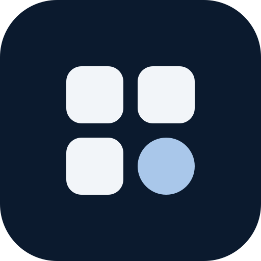
Una app de Mingori StudioUna app de salud para mascotas, con asistente de IA, para dueños de perros y gatos en Argentina que quieren tener vacunas, controles y medicación en un solo lugar, sin planillas ni papeles sueltos. La diseñé y la desarrollé completa, para web y Android.
Recorrido real por la app en el celular
Foto, datos de salud y un puntaje de perfil completo.
Vacunas, medicamentos, desparasitaciones y controles.
Avisos de vencido, de hoy y de mañana.
Responde según la especie, la edad, las alergias, la medicación y el historial de cada mascota.
Puntos y progreso para sostener el hábito de cuidado.
Artículos y listas de cuidado para guardar.
La misma app en su versión web: por dentro y la página pública.
Capturas de la app conectada a su base real. Nada retocado: las respuestas de la IA son las que dio en el momento.
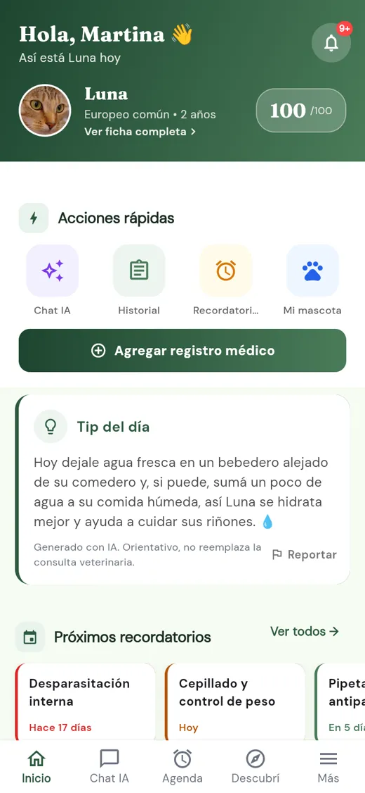
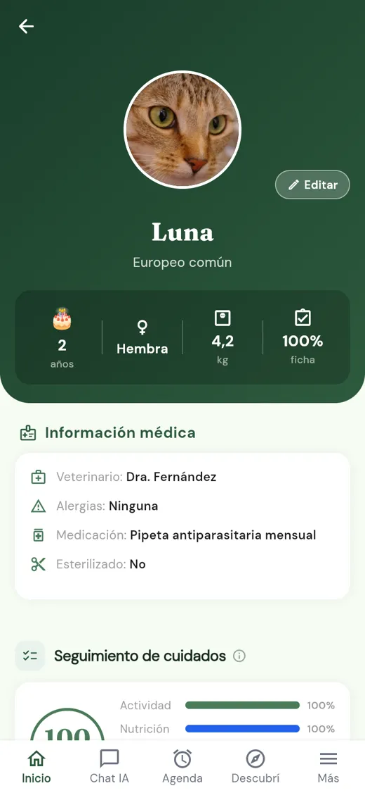
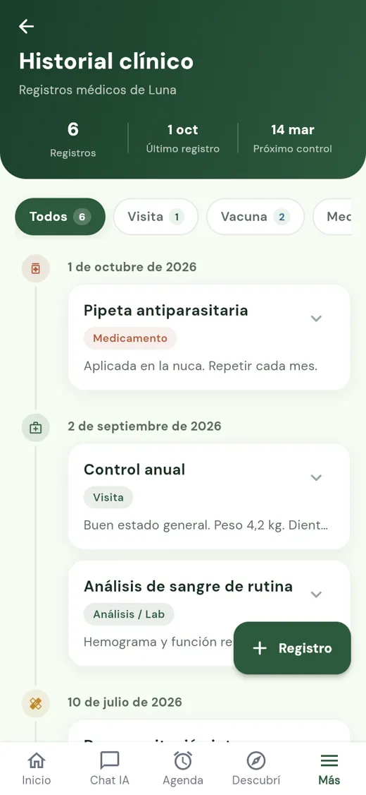
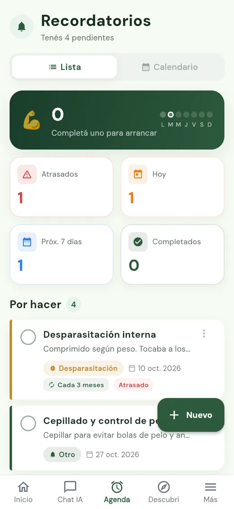
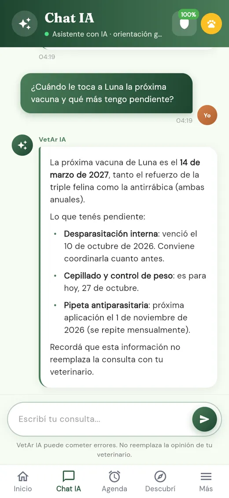
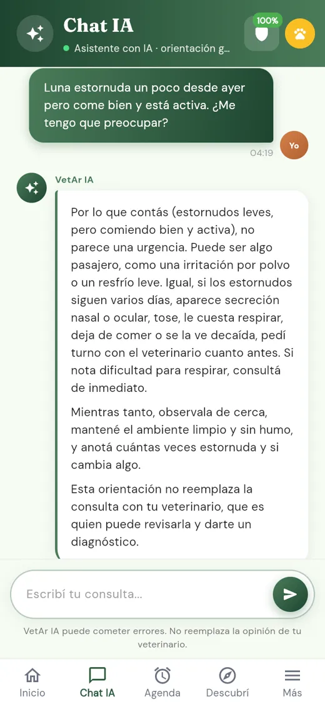
El desafío
La app no habla directo con la IA: pasa por un servidor propio que verifica quién es el usuario, limita cuántas consultas puede hacer y arma solo el contexto de su mascota. Los logros y avisos los otorga la base de datos, no la app, así nadie puede adjudicárselos.
pruebas automáticas que pasan en cada cambio
para web y Android, hecho en Flutter
límite por usuario y global para que el costo no se dispare
cada usuario ve solo lo suyo y puede borrar todo desde la app
FlutterSupabasePostgreSQL con seguridad por usuarioInteligencia artificialVercel
Estado: lista y en revisión en Google Play, a punto de publicarse. ¿Querés recorrerla? Pedime un usuario de prueba con una mascota ya cargada.
Proyecto destacado
Una app de Mingori Studio
Una app de bienestar emocional para chicos de 3 a 18 años, sus familias y sus terapeutas. Cuentos interactivos, juegos, ejercicios de calma y rutinas para casa, y un espacio de trabajo para psicólogos y centros de salud mental. La diseñé y la desarrollé completa, para web y Android.
Cuentos, juegos, calma y rutinas según su edad, en cuatro etapas: de 3 a 5, 6 a 9, 10 a 13 y 14 a 18 años.
Cómo se sintió cada chico en la semana, tiempo de uso con límite diario y preguntas para conversar en casa.
Fichas de pacientes, objetivos y registros, misiones para la casa, biblioteca de técnicas y red de derivación.
Todo el equipo bajo una misma licencia, la actividad del centro en números y marca propia.
Recorrido real por la app en el celular
Paneles para el profesional, la familia y el centro, en la compu.
Así lo ve Sofi, de 7 años: elige cómo se siente, lee un cuento, juega y hace la misión que le dejó su psicóloga.
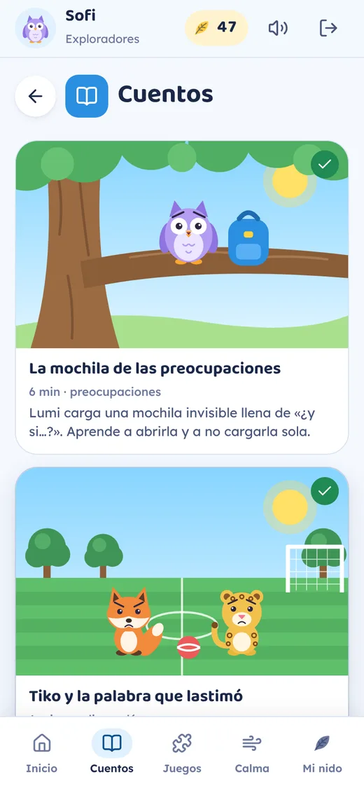
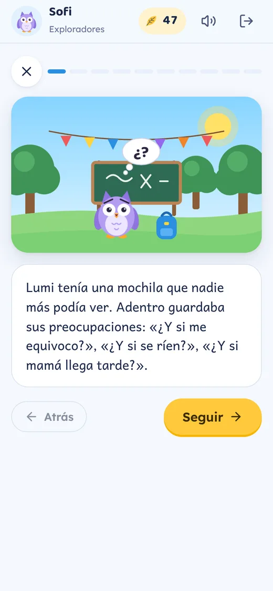
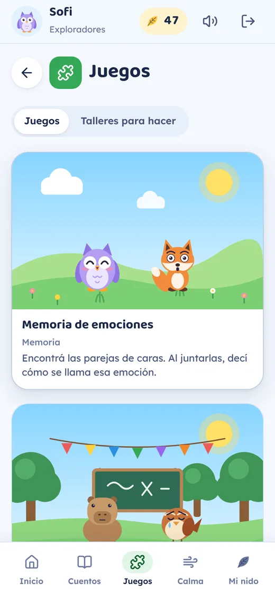
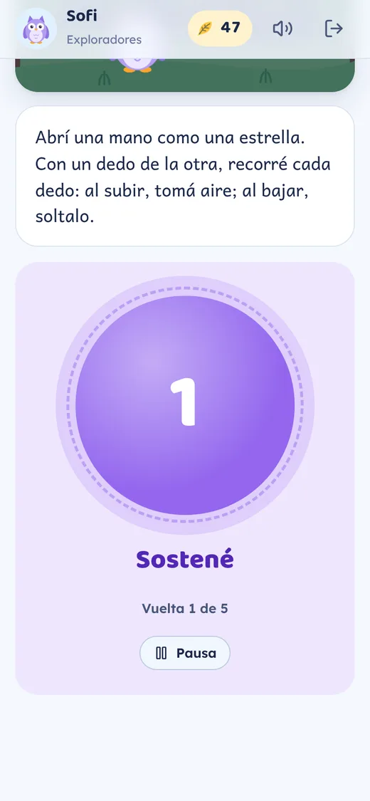
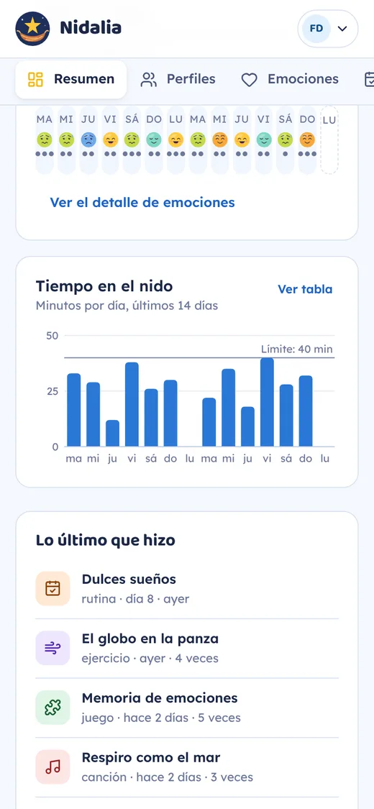
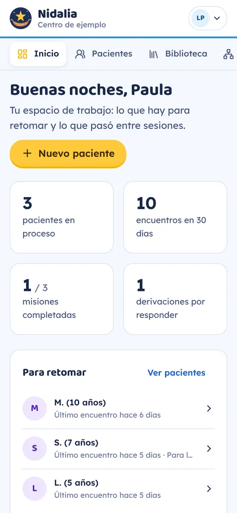
El desafío
Cada cuenta ve solo lo suyo, y esas reglas viven en la base de datos, no en la app. El profesional ve lo que la familia elige compartir con un código de vínculo, y el centro ve la actividad del equipo en números, nunca fichas ni notas. Los planes se cobran con Mercado Pago, con prueba gratis y botones de baja y de arrepentimiento como pide la ley.
chicos, familias, profesionales y centros en una misma app
suscripciones mensuales con Mercado Pago y prueba gratis
seguridad por usuario en la base: el centro ve solo cantidades
pensada para chicos, con límite de tiempo diario
ReactSupabasePostgreSQL con seguridad por usuarioMercado PagoNetlify
Estado: lista y en revisión en Google Play, a punto de publicarse. ¿Querés recorrerla? Pedime un usuario de prueba.
Más trabajos
Dos sistemas de turnos para rubros distintos. Las demos se pueden probar en el navegador.
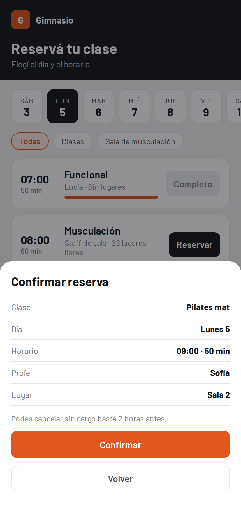
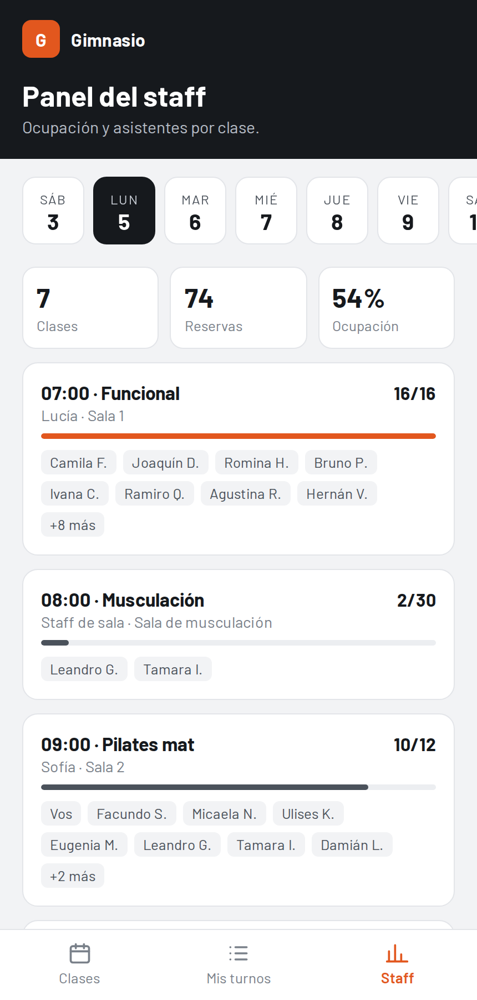
Un sistema simple para que los socios reserven su lugar en cada clase desde el celular y el staff sepa de antemano cuánta gente va a venir.
HTML, CSS y JavaScript, pensado primero para celular. La demo usa datos de ejemplo.
Probar la demo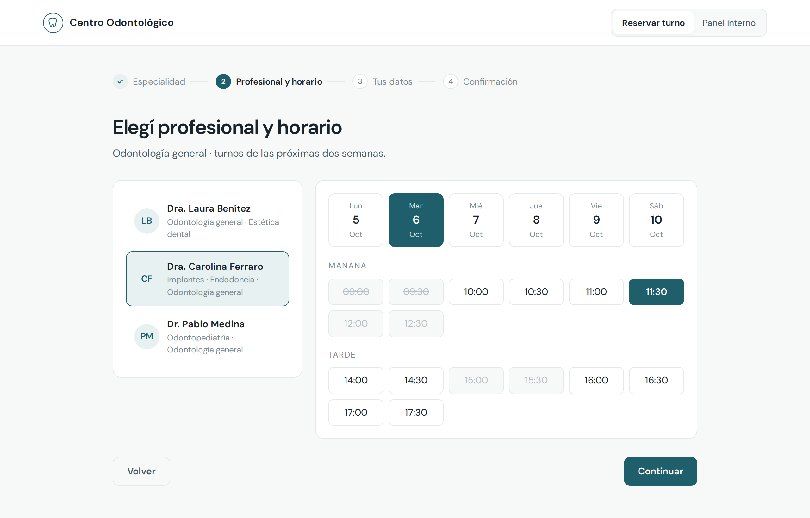
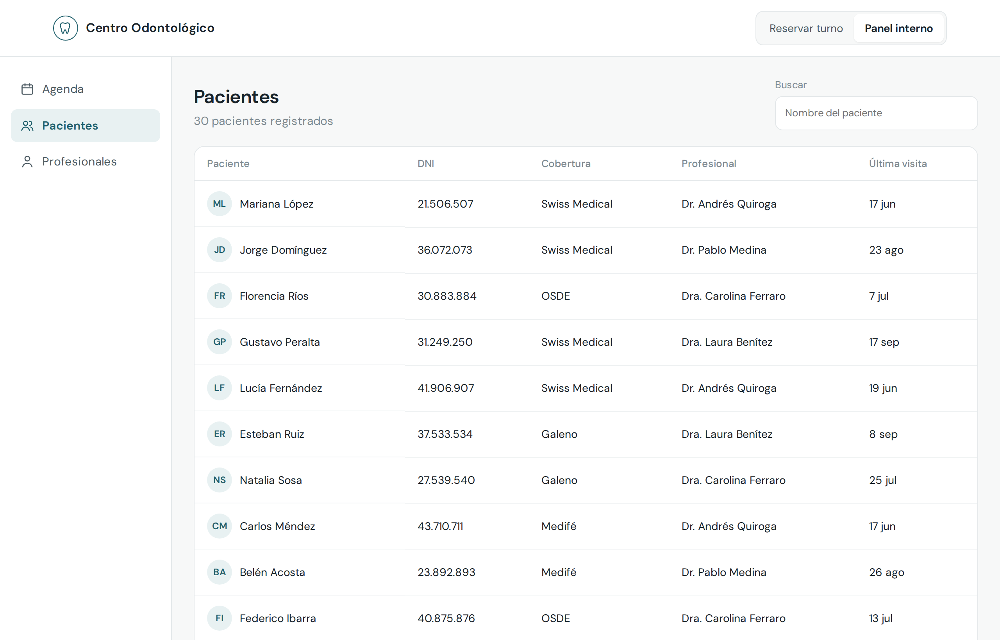
Una plataforma de turnos con dos caras: el paciente reserva online sin llamar, y el centro organiza la agenda de todos sus profesionales en una sola pantalla.
HTML, CSS y JavaScript, adaptable a celular. La demo usa datos de ejemplo.
Probar la demoCómo trabajo
Antes de escribir una línea de código entiendo cómo funciona tu negocio y qué necesitás resolver.
Te muestro el progreso en cada paso para que puedas aprobarlo o corregirlo a tiempo.
Cumplo los plazos que acordamos y sigo disponible para ajustes después de entregar.
Contacto
Contame qué necesitás resolver. Lo que hice en VetAr y en Nidalia lo puedo adaptar a tu rubro: una app con tus clientes, sus datos, recordatorios, cobros y un asistente con IA.